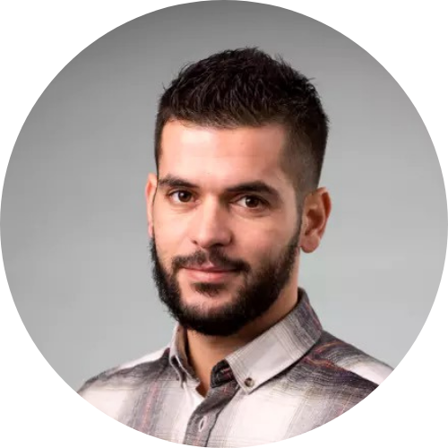

Hello, I'm
Anouar LAMRIQ
Project Manager

Hello, I'm
Project Manager

*11 ans Chef de projet/PO
*6 ans à l'armée au grade de lieutenant
*2 ans de relation client

*Executive master management de projet digital
*Diplôme des études universitaires et militaires
Rigoureux, autonome et force de proposition, de personnalité INTP, je suis passionné par les nouvelles technologies, la digitalisation et l'automatisation des processus métier. Je viens d'une famille modeste, j’étais formé pour réussir, pour tomber afin de me relever encore plus fort, plus performant avec plus de persévérance. L'analyse, la synthèse et le souci du détail sont mes atouts. La communication, l'empathie et le sens du contact sont mes armes. L'amélioration continue est ma vertu, l'ennui est mon ennemi. Plusieurs étapes ont marqué mon parcours professionnel. Etant de formation académique et militaire, j'ai pu affronter les obstacles avec maturité et détermination pour toujours être à la hauteur de mes responsabilités. L’ensemble des métiers que j’ai occupé m’ont permis de développer des compétences en utilisation d’outils de planification et de pilotage projet, d'acquérir des techniques d’audit et de la relation client, d'avoir le sens d’organisation, de priorisation, d’analyse, de coaching et management. Je cherche à exprimer mes talents dans la conception des systèmes de demain, aider les entreprises et les accompagner dans leur transformation digitale. Je peux vous aider à accomplir vos projets. Je peux vous surprendre !
PROMOD · Freelance (Juil. 2024 - aujourd’hui, 5 mois) - Lille, Hauts-de-France, France
Gestion des fonctionnalités de l'ERP SageX3 en collaboration avec les parties prenantes métiers et équipes techniques. Priorisation des fonctionnalités et rédaction des user stories. Coordination des sprints avec l’équipe technique.
LAMRIQ Consulting · Freelance (Juin 2024 - aujourd’hui, 6 mois) - Paris, Île-de-France, France
Expertise en gestion de projets IT, transformation digitale, et formation. Utilisation de méthodologies agiles pour accompagner les entreprises dans la gestion de projets digitaux et l’optimisation des processus métiers.
Lille Métropole Habitat (Juil. 2023 - Nov. 2023, 5 mois) - Lille, Hauts-de-France, France
Création et management de l'office de données, développement de la stratégie de gouvernance des données, et pilotage des projets en lien avec les métiers et la DSI.
LAMCO Conseil & Pilotage · Freelance (Janv. 2021 - Oct. 2023, 2 ans 10 mois) - Lille, Hauts-de-France, France
Responsable de l’évolution des produits, gestion de l’intégration d’un nouvel ERP Finance et maintenance des applications finance. Conception de nouveaux modules et automatisation des processus financiers.
LAMCO Conseil & Pilotage · Freelance (Sept. 2019 - Déc. 2020, 1 an 4 mois) - France
Supervision des équipes internes et prestataires, définition des besoins clients, suivi de l’avancement des projets et mise en place des indicateurs de performance.
Yneia · CDI (Sept. 2018 - Août 2019, 1 an) - Lille, France
Responsable de la gestion des projets de dématérialisation pour Air France Industrie. Recueil des besoins métiers, rédaction des spécifications fonctionnelles, et pilotage des projets de transformation numérique.
Chef de projet - Automatisation des process - DL SOFTWARE (févr. 2018 - sept. 2018)
Responsable coordination applicatif
Chef de projet (Responsable de compte senior)
Night Auditor
Lieutenant des Forces Armées Royales Marocaines
Browse My
Get in Touch